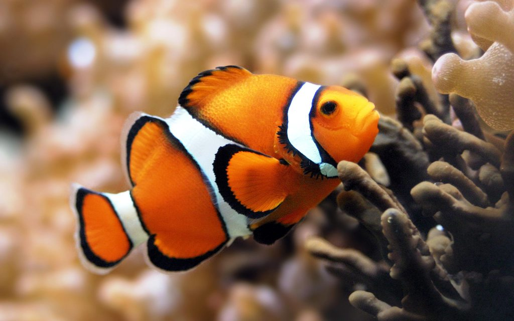
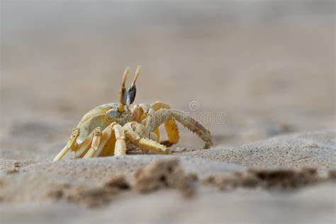

|
Where Dolphins live/ What type of animals they are:
|
Different types of Dolphins:
|
What they eat/Potential threats for them:
|
Fun facts about dolphins:
|

|

|

|

|
What do Dolphins eat?
Dolphins munch on a variety of seafood. This varies from Jellyfish all the way to their own species! That's right,
Dolphins do eat other Dolphins, and quite frequently too. Different species of Dolphins also eat different things. For example, pink dolphins tend to eat a type of
fish known as catifsh, whilst spinner dolphins eat squid and/or shrimp! Alongside this, dolphins also eat:
- Fish
- Squid
- Whales
- Crustaceans
- Crabs
Potential threats to Dolphins:
Although Dolphins are fun and loving creatures, there are still many threats and dangers to their species.
These include:
- Orcas (also known as killer whales)
- Sharks
- The rising sea levels
- Acidifcation in the ocean
- poisenous life in the waters such as algae
As you can see, there are many different threats to Dolphins and many other species of sealife,
and we must do anything we can to keep them safe and happy in their home!